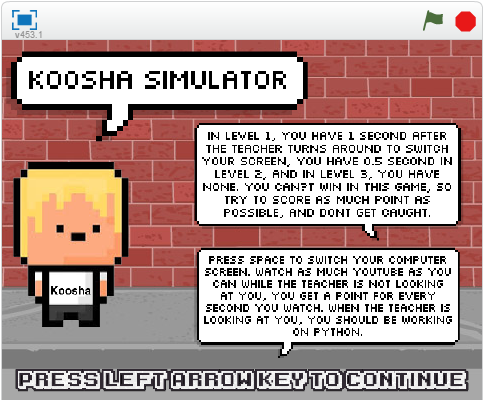

Final Project Content

Description:
You are Koosha, you want to watch Youtube, but you don’t want to get caught by your teacher. Press space to switch your computer screen. Watch as much Youtube as you can while the teacher is not looking at you, you get a point for every second you watch. When the teacher is looking at you, you should be working on Python. In level 1, you have a second after the teacher turns around to switch your screen, you have half a second in level 2, and in level 3, you have none. You can’t win in this game, so try to score as much point as possible, and don’t get caught.